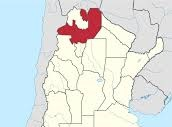
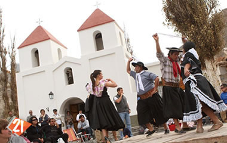

|
El Día de la Tradición se celebra en Argentina el 10 de noviembre, fecha que fue elegida en conmemoración del nacimiento del poeta argentino José Hernández (1834 - 1886), que escribió, entre otros, el poema narrativo El gaucho Martín Fierro, La vuelta de Martín Fierro, relatos en forma de verso de la experiencia de un gaucho, su estilo de vida, sus costumbres, su lengua y códigos de honor. |
| Salta | |||
|  | Costumbres y celebraciones religiosas, ritos paganos y usos cotidianos responden a este patrón indígena hispano que se ha entremezclado de tal forma que ha dado origen a una cultura mestiza propia, que identifica a esta región del norte de Argentina. De esta forma no resulta extraño que las fiestas populares que se realizan en los distintos pueblos de Salta conjuguen un espíritu religioso con la colorida magia que emana de su música, danza, y rituales tradicionales. El habla, cantos bailes, instrumentos y hasta la forma de vestir hacen del salteño un hombre particular destacado por su serenidad, hospitalidad y simpatía. |
||
|  | |||